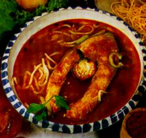
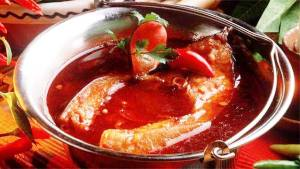
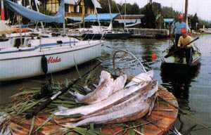

|
|
|
Fischgerichte
/ Halételek |
| |
| |
Fisch
verspeist man gekocht oder gebraten weltweit
ähnlich, daher wollen wir auf die Wiedergabe weitgehend verzichten und
konzentrieren uns darauf, was in Ungarn anders ist.
Die
ungarische Küche unterscheidet sich von der deutschen
Küche vor allem in der Verwendung von Paprika in
großen Mengen. Das fällt am meisten bei den
Fischsuppen auf. In Ungarn kennt man zwei verschiedene Fischsuppen, die
nach den südungarischen Städten Baja (an der Donau)
und Szeged (am Theiß) benannt sind.
|
|
|
|
|
Welche
Suppe schmeckt besser? Die
Fischsuppenfeste in
und
ziehen Tausende von
Interessenten an, die zwei Städte rivalisieren wie
„Oxford und Cambridge”,
viele wollen ins Guiness-Buch der Rekorde aufgenommen werden. Im
allgemeinen wird
die aus Fischsud gekochte Suppe „Szegediner”, die
mit Nudeln servierte „Bajaer”
genannt. Paprikapulver breitet sich in Ungarn seit etwa 1890 aus dem ersten
Paprikaanbaugebiet um Szegedin aus. Lange Zeit galt: In Baja
würzt man weiterhin mit Salz und Pfeffer, in Szegedin mit Salz und
Paprika, aber dieser Unterschied verschwindet
allmählich.
|
|
|
|
|
|
Fischsuppe Baja Art / Bajai Halászlé |
| |
Wir wollen diese Fischsuppe
nicht gesondert beschreiben, denn das Rezept ist absolut identisch mit
dem, was man in Deutschland entlang der Flüsse Donau, Rhein,
Main oder Schlei im Norden kennt. Ja sogar von der Atlantikküste in Frankreich
über das Baltikum weit hinein in Russland kennt man das
gleiche Rezept, wie es vor rd. 300 Jahren die Donauschwaben
mit sich nach Ungarn brachten. Vor allem in der Gegend um
Baja, am südlichen Donaulauf, wo besonders viele Karpfen in
den unzähligen Nebenarmen der Donau schwimmen, ist das
Fischsuppenrezept ein Alltagsthema. Andererseits ist das Rezept sehr gut
vergleichbar mit der "Wiener Karpfenpeuschelsuppe", weil die
Ungarn Rogen und Milch mitverwenden. Das ist ein Hinweis darauf, dass der
Ursprung der Fischsuppe auf Bajaer Art wahrscheinlich im deutschen Sprachraum liegt
- schwäbisch wegen der darin verwendeten Nudeln. Baja an
der Donau ist eine Gegend, wo vor rd. 250 Jahren Ungarndeutsche, die sog. Donauschwaben
in einer von den Türken weitgehend menschenleer hinterlassenen
Landschaft überwiegend per Donauschiff ansiedelten.... Die meisten Siedler stiegen in Ulm in die
Donaukähne ein und stiegen in Wien in
größere Donauschiffe um. An
der Umsteigestation in Wien ist heute eine Schiffsausstellung,
wo man die damaligen Kähne und Auswandererschiffe betrachten
kann.
Die Ansiedlung erfolgte nach der Vertreibung der Türken in
einer von den Türken
verwüsteten,
menschenleer hinterlassenen Gegend, wo den
neuen Landesherren künftige Steuerzahler fehlten und daher
für die Kultivierung ihrer Ländereien
mit anfänglicher Steuerfreiheit lockten, aber nach dem sog. Ausgleich
zwischen Österreich und Ungarn (1867) viel mehr zur
Steuerkasse gebeten wurden, als die Ungarn...
...und so wird die
Fischsuppe in
der Gegend
von Baja an der
Donau mit
Nudeln auf schwäbische Art, traditionell von den
Ansässigen mit Spätzle, von den Zugereisten mit
allerlei Nudelsorten serviert. - Noch soviel
zum Verständnis, dass diese Fischsuppe reich an Salz
und Pfeffer ist. Unabhängig von der Wetterlage findet
alljährlich das
traditionelle Fischsuppen-Festival in Baja an der
Donau statt. Die Suppe wird dabei am Donauufer in einer Reihe von unzähligen Kesseln zubereitet.
|
Die Fischsuppe wird am Rhein und im Norden an der Schlei nach
gleichem Rezept genauso zubereitet, wie in Ungarn am unteren Lauf
der Donau in der Umgebung der Stadt Baja. Dieses Rezept wird in
Ungarn als Fischsuppe nach Baja Art bezeichnet.
Sie kamen überwiegend aus dem Schwabenland und brachten u.a.
dieses Rezept mit nach Ungarn. Spätzle bzw. Nockerln als
Suppeninhalt ist ein weiterer Hinweis auf schwäbischen
Ursprung der Fischsuppe nach Art der Donaustadt Baja.
|
Passender Wein:
Welschriesling, Chardonnay,
Kadarka,
Portugieser
|
|
Szegediner
Fischsuppe / Szegedi halászlé |
| |
Der Unterschied im Rezept ist gering - in
Szegedin dominiert Paprika statt Pfeffer. Der Grund dafür ist
wahrscheinlich, dass die Gegend von Szegedin ein Paprika-Anbaugebiet
ist.
Andererseits ist das Rezept noch immer gut vergleichbar mit der
"Wiener Karpfenpeuschelsuppe", weil die Ungarn Rogen und Milch
mitverwenden, nur in Szegedin werden Unmengen von scharfem
Paprikapulver mitgekocht.
|
|
 |
Eine andere Art der Zubereitung der Fischsuppe im Zentrum des
Paprikaanbaugebietes nach Szegediner Art unterscheidet sich von der
Fischsuppe nach Baja Art lediglich in der Verwendung von Unmengen
von Paprikapulver. Die paprikareiche Fischsuppe hat sich in weiten
Teilen Ungarns durchgesetzt. Wenn in ungarischen Restaurants
Fischsuppe angeboten wird, dann nur sehr selten nicht nach
Szegediner Art. Serviert wird in suppentellergroßen Kesseln.
1-2 Karpenscheiben bekommt ein jeder und man isst nur
Brot dazu, das die Schärfe löscht und im Notfall beim Verschlucken
feiner Gräte hilft. |
 |
Das
Bild zeigt den Höhepunkt - die
Verköstigung - eines
Wettbewerbs in
Fischsuppenkochen am Badacsonyberg am Balaton.
Um
diese typische Speise der ungarischen Gastronomie rankten sich schon
lange die Legenden. Die Fische zu fangen und die sättigende
Suppe zu kochen
war Männersache - ganz wie bei den Hirtengerichten. Aber das
Menü mit
Fischgrieben, Fischsuppe und Bratfisch haben Frauen kreiert. Die
Harmonie von
Fisch, Zwiebeln und Paprika wird konzentriert, indem man
kleinere Fische zu einer „Grundsuppe” kocht,
passiert und darin die
Fischscheiben, meistens von Karpfen kocht. Heute entsteht der Sud durch
Pürieren von Gräten,
Kopf und Schwanz. |
Serviert wird die Fischsuppe zuhause und in Gaststätten so,
wie an diesen Bildern ersichtlich. Mindestens
eine Karpfenscheibe gehört in jeden Teller und daneben dicke Scheiben von
Weißbrot, das im Notfall helfen soll, wenn man Gräte
verschluckt.
Die
Fischsuppe in Baja wird mit Nudeln gekocht, die Szegediner
Fischsuppe ist feuerrot vom Paprikapulver - dieser Unterschied verschwindet
jedoch mit der Zeit. |
 |
Das
Rezept für 8 Personen:
Zutaten:
2 kg
beliebigen
Fisch (z.B. Hecht, Wels, Barsch, Schleie, die Hälfte sollte jedoch Karpfen
sein), 3 große Zwiebeln, 3 mittelgroße Tomaten, 3 Paprikaschoten, 3 EL
Rosenpaprikapulver, 1-2 scharfe Paprikaschoten, Salz, 1 l
Rotwein.
|
Vorbereitung: Den
Karpfen von den Schuppen befreien und säubern. Aus dem Fischmaul den
Bitterzahn entfernen, aus dem Fischrumpf Scheiben schneiden, den
Rest in
kleine Stücke schneiden und salzen.
Paprikaschoten und Tomaten in kleine Stücke, die Zwiebeln in
kleine Ringe schneiden.
|
Zubereitung: Die
Fischköpfe, Mittelgräten und Flossen zusammen mit den
Zwiebelringen in einen Topf geben und mit Wasser auffüllen,
sodass alles bedeckt ist. Aufkochen und den Rosenpaprika
dazugeben. Ca. 1 Stunde köcheln lassen.
Die fertige Fischsuppe abseihen und zusammen mit den
Fischstücken in einen Topf geben. Rogen, Fischmilch,
kleingehackte Tomaten und Paprikaschoten hinzufügen und ca.
15-20 Minuten bei starker Hitze gar kochen. Die Fischsuppe
nicht umrühren, sondern nur den Topf schwenken. |
Serviervorschlag:
sehr heiß in einer Suppenterrine servieren und individuell
mit Schmand oder
Saurer Sahne beträufeln. Brot oder Nudeln als
Beilage, wie oben beschrieben.
Die
Ungarn essen gewöhnlich Topfenfleckerl bzw.
nach der
Fischsuppe. Es ist eine
andere Landesspezialität aus der ungarischen Küche,
die in Deutschland zwar als Vorspeise gilt, aber das
allgemeine Wohlbefinden nach
der
paprikareichen Fischsuppe besonders
hervorragend abrundet.
Getränkevorschlag:
Kadarka, Portugieser, Chardonnay und Welschriesling aus dem Weinbaugebiet
oder
Lindenblatt aus dem Weinbaugebiet
auf
8-10°C gekühlt.
|
Landesweit berühmt ist am Plattensee
die Fischgaststätte
in der Nähe der Hafenmole, direkt im Yachthfen
von
oder in der Pußta in der
Nähe von
Szeged das aus der Werbung gut bekannte Fischrestaurant:
|
 |
Die
Ortschaft Algyő liegt
nordöstlich gerade außerhalb von Szeged, etwa 5 km
entfernt vom Stadtzentrum der Pußtastadt.
|
|
|
|
|
|
Plattensee-Zander / Fogas |
| |
|
 |
Als landestypische Kuriosität gilt der Fogas, der über einjährige
Zander - eine Unterart des Zanders, der
keine feine, sondern nur kräftige Gräte hat und "nur im
Balaton vorkommt" - so steht es seit Jahrzehnten in den
Glanzbroschüren des Ugarischen Touristenamtes. Wir machen darauf
aufmerksam, dass der Fogas, dieser einmalige Zander auch im Velence
See, rd. 45 km südöstlich von Budapest seit Jahrzehnten vorkommt und z.B. in der
Gaststätte
in Agárd ebenso lange schon auf der
Speisekarte steht. Gegrillt oder gebraten, pur oder in einer
Paprikapanade ist der Fogas eine einmalige Delikatesse.
Einen erfolgreichen Fang zeigt das Bild links in der Nähe
der Hafenmole von Balatonfüred. |
 |
Den Fogas in allen Varianten auf den Tisch serviert bekommt man in
der in Ungarn landesweit bekannten Fischgaststätte
in
in der Nähe der Hafenmole.
Bild links: Fogas am Grillteller in der Fischgaststätte Halászkert in
Balatonfüred
Passender Wein:
Traminer, Chardonnay. |
|
Berühmte Fischrestaurants in Ungarn |
| |
|
Die
bekannteste Fischgaststätte von Ungarn heißt seit 2015
. Es befindet sich im
Budapester Stadtteil Óbuda, am Hauptplatz direkt gegenüber dem
Rathaus des dritten Stadtbezirkes von Budapest,
westlich der Margaretheninsel. Berühmt geworden ist diese
Gaststätte durch spezielle, für die vermeintlich so eigenartigen Topfenfleckerln komponierte
Schlagerlieder Anfang der 1920er Jahre. Nach einigen, z.T. sehr langen Unterbrechungen
besteht
das Restaurant seit 1883. Es schließt und eröffnet ihre Tür
immer-wieder und bezeichnet sich nunmehr als "neu". Die Küche ist
ordentlich, allerdings muss der Gast sich auf Nepp mit
Zigeunermusik einstellen. Von der langen Speisekarte ist vieles
ausverkauft und das erfährt der Gast bei der Bestellung und der
Ober drängt, ja sogar bedrängt den Gast für eine rasche Bestellung
trotz weniger Gäste. Das ist für uns nichts neu in der ungarischen Gastronomie. Die
Wartezeiten nach der Bestellung sind enorm lang, währenddessen
wird der Gast für weitere Angebote der Gaststätte animiert, evtl.
etwas anderes zu bestellen. Wer
damit zurecht kommt, ist hier richtig. Zudem sahen wir während
unserer Anwesenheit zur Rushhour wenige Gäste, viel Personal und
die Musiker der Zigeunerkapelle spielten überhaupt nicht,
dafür liefen sie kreuz und quer im Wirtschaftsraum.
Wir vermuten, dass der nächste Gastwirt an dieser zentral
gelegenen Platz schon bereit steht. |
| |
|
| |
|
In
am Plattensee
die Fischgaststätte
in der Nähe der Hafenmole: |
|
|
| |
| |
|
In der südöstlichen Pußta in der
Nähe von
das bekannte Fischrestaurant : |
|
| |
| |
Unterwegs
in Südungarn, westlich der Donau ist ein Besuch
in der
Landgaststätte Beugró Vendéglő ein einmaliges Erlebnis. Hier
werden diverse Gerichte mit allen erdenkbaren Fischarten
aus Ungarn angeboten
 |
 |
Die Landgaststätte Beugró Vendéglő befindet sich in der Pusztagemeinde Rácalmás direkt an
der Donau, nur 70 km südlich von Budapest gelegen, 2 km entfernt
von der Ausfahrt der
Autobahn M6. Die Gaststätte ist relativ neu. Rácalmás ist aber
eine Gemeinde mit uralter Fischereitradition. Die Donau war
in diesem Flussabschnitt lange Zeit ein Überschwemmungsgebiet und
die Einheimischen waren seit Jahrhunderten vom Fischfang
abhängig.
Von Haus zu Haus entwickelten sich
in Rácalmás unzählige
Fischgerichte und so bietet diese Landgaststätte mit
einer hervorragenden Küche viele kaum bekannte, ortsübliche
Spezialitäten an, so wie am Bild links:
Welspaprikasch mit Topfenfleckerln garniert und diese mit
Fischgrammeln getoppt. Wer einen Grauburgunder
nicht verträgt, dem empfehlen wir einen Portugieser Rosé,
Lindenblatt oder Tokajer dazu. |
| |
| |
Ungarn-Tourist Team

|
| |
 |
| |
|


 Sie
wollen endlich mal eine Szegediner
Fischsuppe nach
Originalrezept in Budapest genießen. Dann nichts wie hin.
Sie
wollen endlich mal eine Szegediner
Fischsuppe nach
Originalrezept in Budapest genießen. Dann nichts wie hin.